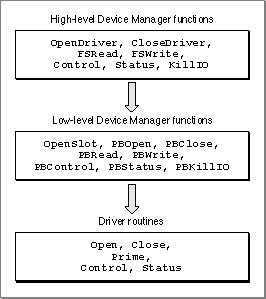
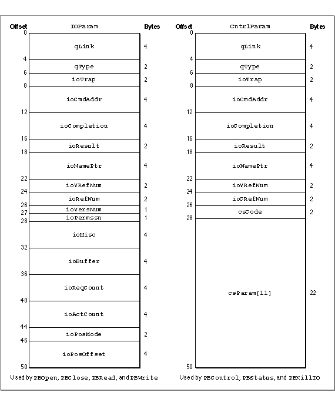

Legacy Document
Important: The information in this document is obsolete and should not be used for new development.
Important: The information in this document is obsolete and should not be used for new development.


Using the Device Manager
Your application can use Device Manager functions to communicate with devices through their device drivers. This section describes the Device Manager functions that allow you to open, close, and control device drivers, exchange information with them, and monitor their status. The Device Manager also provides support functions useful for writing and installing device drivers. The section "Writing a Device Driver," beginning on page 1-24, describes these support functions.The Device Manager includes high-level and low-level versions of most of its functions. The high-level versions are somewhat easier to use, but they allow less control of how the Device Manager processes the I/O request (for example, they are always handled synchronously) and they return less information to your application. Conversely, the low-level functions require some additional setup, but they allow you greater control and return more information.
The high-level Device Manager functions call the low-level functions, which in turn call the appropriate driver routine. For example, the Device Manager converts the high-level
FSReadfunction to a low-levelPBReadfunction before calling the driver's prime routine. Figure 1-7 depicts this hierarchy.Figure 1-7 Hierarchy of Device Manager functions

The high-level functions differ in form, but the low-level functions all have the form:
pascal OSErr PBRoutineName (ParmBlkPtr paramBlock, Boolean async);TheparamBlockparameter is a pointer to a structure of typeParamBlockRec. You use the fields of this structure to pass more complete information to the driver than you can with high-level functions, and the driver uses the same structure to pass information back. TheParamBlockRecis defined in C as a union of six structures, but only theIOParamandCntrlParamtypes are used by the Device Manager. Figure 1-8 shows the fields of theParamBlockRecstructure used by the Device Manager. These fields are described in detail later in this section and in "Data Structures" on page 1-53.The
asyncparameter specifies whether the Device Manager should process the function asynchronously. For synchronous requests you set this parameter tofalse; the Device Manager adds the parameter block to the driver I/O queue and waits until the driver completes the request (which means it has completed all previously queued requests) before returning control to your application.
If you set the
- WARNING
- Never call any Device Manager function synchronously at interrupt time. A synchronous request at interrupt time may block other pending I/O requests. Because the device driver cannot begin processing the synchronous request until it completes the other requests in its queue, this situation can cause the Device Manager to loop indefinitely while it waits for the device driver to complete the synchronous request.

asyncparameter totrue, the Device Manager adds the parameter block to the driver I/O queue and returns control to your application immediately. In this case, anoErrresult code signifies that the request was successfully queued, not that the request was successfully completed. The Device Manager sets theioResultfield of the parameter block to 1 when the request is queued, and stores the actual result code there when the driver indicates the request is complete.When you make an asynchronous request you can also provide a pointer to a completion routine in the
ioCompletionfield of the parameter block. The Device Manager executes this routine when the driver completes the asynchronous request. Your completion routine could, for example, set a flag to signal your application that the I/O operation is complete. See "Handling Asynchronous I/O," beginning on page 1-37, for more information about completion routines and asynchronous operation.
Figure 1-8 Device Manager parameter blocks
- Assembly-Language Note
- You can call a Device Manager function immediately, bypassing the I/O queue, by setting bit 9 of the trap word. You can set or test this bit using the global constant
noQueueBit. However, remember that the device driver might be processing another request, especially if you make an immediate request during interrupt time. The driver must be reentrant to handle this situation properly. You should always check a driver's documentation to make sure the driver is reentrant before making immediate requests.
When you use a low-level Device Manager function, the Device Manager places the parameter block at the end of the driver I/O queue and then either waits for the driver to complete the request or returns control to your application, depending on the value of the
asyncparameter. For the high-level functions, the Device Manager creates a parameter block for you, filling the required fields with the values you supplied. The Device Manager then inserts the parameter block at the end of the I/O queue as a synchronous request. As previously-queued requests are processed, the parameter block moves forward in the I/O queue. When the parameter block is at the beginning of the queue, the Device Manager calls the appropriate driver routine and passes it a pointer to the parameter block and a pointer to the driver's device control entry.For read and write requests, the Device Manager calls the driver's prime routine. This routine can execute synchronously, completing the requested read or write transaction before returning control to the Device Manager, or asynchronously, beginning the requested transaction but returning control to the Device Manager before completing it. For information about reading and writing data to devices, see "Communicating With Device Drivers" on page 1-20.
If you are writing a device driver and your driver's prime routine can execute asynchronously, your driver must use some mechanism to regain control of the processor to complete asynchronous requests. Your driver would typically use an interrupt handler for this purpose, and notify the Device Manager when the transaction is complete. See "Writing a Prime Routine" on page 1-33 and "Handling Asynchronous I/O" on page 1-37 for more information about writing asynchronous routines.
The Device Manager handles control and status requests in the same way as read and write requests, except that for control requests it calls the control routine and for status requests it calls the status routine. See "Controlling and Monitoring Device Drivers" on page 1-22 for information about making these requests. For information about providing status and control routines for your own driver, see "Writing Control and Status Routines" on page 1-34.
The Device Manager responds to
KillIOrequests by calling the device driver's control routine with a value ofkillCodefor thecsCodeparameter. If the driver returnsnoErr, the Device Manager removes all parameter blocks from the queue, calling their completion routines with the result codeabortErr. For more information about canceling I/O requests, see the description of theKillIOfunction on page 1-80. For information on how your driver can handleKillIOrequests, see "Writing Control and Status Routines" on page 1-34.In response to a close request, the Device Manager waits until the driver is inactive, then calls the driver's close routine. When the driver indicates it has processed the close request, the Device Manager unlocks the driver resource if the
dRAMBasedflag is set, and unlocks the device control entry if thedNeedLockflag is not set. The Device Manager does not release the driver resource or dispose of the device control entry unless you call theDriverRemovefunction. The next section describes how to open and close a device driver. See "Writing Open and Close Routines" on page 1-31 for information about how your driver should respond to open and close requests.Opening and Closing Device Drivers
You must open a driver before your application can communicate with it. The Device Manager provides three functions for opening device drivers:OpenDriver,OpenSlot, andPBOpen. Each of these functions requires a driver name and returns a driver reference number.A driver name consists of a period (.) followed by any sequence of 1 to 254 printing characters; for example, .ATP is the name of one of the high-level AppleTalk drivers. The initial period in a driver name allows the Device Manager and the File Manager, which share the
_Opentrap, to distinguish between driver names and filenames. Refer to a device driver's documentation to determine the driver name.The
OpenDriverfunction, which is the high-level function for opening a device driver, takes the driver name as its first parameter and returns the driver reference number in its second parameter. When an application or another manager calls theOpenDriverfunction, the Device Manager first searches the unit table to see if a driver with the specified name is already installed. If the name does not match any installed driver, the Device Manager searches the current Resource Manager search path for a driver resource with the specified name.To open a device driver from a resource, the Device Manager
Listing 1-1 shows an application-defined function that uses the
- creates a device control entry for the driver, filling in the DCE with values from the header of the driver resource
- installs a handle to the device control entry in the unit table at a location determined by the driver resource ID
- calls the driver's open routine
OpenDriverfunction to open a driver.Listing 1-1 Opening a device driver
short gDrvrRefNum; /* global variable for storing my driver reference number */ OSErr MyOpenDriver(void) { Handle drvrHdl; short drvrID; short tempDrvrID; ResType drvrType; Str255 drvrName; OSErr myErr; tempDrvrID = MyFindSpaceInUnitTable(); /* see Listing 1-14 */ if (tempDrvrID > 0) { drvrHdl = GetNamedResource((ResType)'DRVR', "\p.MYDRIVER"); GetResInfo(drvrHdl, &drvrID, &drvrType, drvrName); SetResInfo(drvrHdl, tempDrvrID, drvrName); myErr = OpenDriver("\p.MYDRIVER", &gDrvrRefNum); if (myErr == noErr) DetachResource(drvrHdl); drvrHdl = GetNamedResource((ResType)'DRVR', drvrName); SetResInfo(drvrHdl, drvrID, drvrName); return(myErr); } else return(openErr); /* no space in the unit table */ }TheOpenDriverfunction uses the resource ID of the driver resource as the unit number for the device driver, which determines where the device control entry will be stored in the unit table. Because theOpenDriverfunction does not check to see if another device control entry is already located at that position in the unit table, theMyOpenDriverfunction begins by searching for an available space in the unit table. Listing 1-14 on page 1-39 shows theMyFindSpaceInUnitTablefunction.If there is room in the unit table, the
MyOpenDriverfunction callsGetNamedResourceto load the resource into memory, then changes the ID of the driver resource in the resource map before calling theOpenDriverfunction.After the driver is open,
MyOpenDrivercalls theDetachResourcefunction to prevent the driver resource from being released. Finally,MyOpenDriverrestores the original resource ID so that the driver's resource file remains unchanged.You can use the
PBOpenorOpenSlotfunctions instead of theOpenDriverfunction when you want more control over how the Device Manager opens the device driver. For example, you can set read and write permissions for the device with theioPermssnfield of the parameter block. Use theOpenSlotfunction to open drivers that serve slot devices, and thePBOpenfunction for all other drivers.Because the Device Manager always opens device drivers synchronously, you must set the
asyncparameter tofalsewhen using thePBOpenorOpenSlotfunctions. If a device driver is already open, the Device Manager simply returns the driver reference number.The remaining Device Manager functions require your application to use the driver reference number, instead of the driver name, when referring to a device driver.
When you finish using a driver, you may want to close it. However, you do not normally close drivers that might be needed by the system or by other applications. Whether you should close a particular driver depends on the type of driver and how it is being used. Refer to the driver's documentation to determine if it should be closed. See the appropriate chapters in this book and other books in the Inside Macintosh series for information about standard Macintosh drivers.
If you do want to close a driver, you can use the high-level
CloseDriverfunction or the low-levelPBClosefunction. Listing 1-2 shows how to use thePBClosefunction to close the driver opened in Listing 1-1.Listing 1-2 Closing a device driver
OSErr MyCloseDriver(short refNum) { IOParam paramBlock; paramBlock.ioRefNum = refNum; return(PBClose((ParmBlkPtr)¶mBlock, false)); }TheMyCloseDriverfunction specifies the driver to close by placing the driver reference number in theioRefNumfield of the parameter block and then calls the Device ManagerPBClosefunction.Communicating With Device Drivers
Once a device driver is open and you have its reference number, you can use Device Manager functions to exchange information with it. When you want to receive information from a device driver, you first allocate a data buffer to hold the information and then call theFSReadorPBReadfunction. To send information to a device driver, you first store the information in a data buffer and then call theFSWriteorPBWritefunction. You must specify the number of bytes you want transferred when calling any of these functions.The
PBReadandPBWritefunctions support asynchronous requests, and allow you to specify a completion routine. For block devices you specify the drive number, positioning mode, and positioning offset in theioVRefNum,ioPosMode, andioPosOffsetfields of the parameter block. The Device Manager does not interpret these fields--they are used by the device driver to locate the desired data block.The Macintosh Operating System defines three positioning modes for block devices:
You specify the positioning mode by setting the
- At the current position. Transfer begins at the current position on the
medium--typically where the last transfer ended.- Offset from the start. Transfer begins at the specified offset from the beginning of the medium.
- Offset from the mark. Transfer begins at the specified offset from the current position.
ioPosModefield to one of the defined constants,fsAtMark,fsFromStart, orfsFromMark. Be sure you specify a mode that is compatible with the device.On completion, the
PBReadandPBWritefunctions return in theioActCountfield of the parameter block the total number of bytes actually transferred. For block devices, these functions also return a new positioning offset in theioPosOffsetfield.Certain device drivers provide additional abilities with the read and write functions. For example, the Disk Driver allows you to use the
PBReadfunction to verify that data written to a block device matches the data in memory. To do this, you add the
read-verify constantrdVerifyto the value in theioPosModefield of the parameter block, as explained in the description of thePBReadfunction on page 1-70.Listing 1-3 shows an example of how to read from a device driver.
Listing 1-3 Reading from a device driver
OSErr MyReadFromDriver(short refNum) { IOParam paramBlock; char buffer[256]; paramBlock.ioRefNum = refNum; paramBlock.ioReqCount = 256; paramBlock.ioBuffer = (Ptr)buffer; return(PBRead((ParmBlkPtr)¶mBlock, false)); }TheMyReadFromDriverfunction uses a parameter block to specify the device driver (by its driver reference number), the number of bytes to read, and a pointer to a buffer to receive the data. WhenMyReadFromDrivercalls thePBReadfunction, the Device Manager appends the parameter block to the end of the driver I/O queue. Because theasyncparameter is set tofalse, the Device Manager does not return control toMyReadFromDriveruntil the driver has completed every request in its queue.Listing 1-4 shows an example of how to write to a device driver.
Listing 1-4 Writing to a device driver
OSErr MyWriteToDriver(short refNum) { IOParam paramBlock; char* buffer; buffer = "Data to Write"; paramBlock.ioCompletion = nil; paramBlock.ioRefNum = refNum; paramBlock.ioBuffer = (Ptr)buffer; paramBlock.ioReqCount = strlen(buffer); return(PBWrite((ParmBlkPtr)¶mBlock, false)); }TheMyWriteToDriverfunction also uses a parameter block to transfer information to the driver. After filling in the necessary fields,MyWriteToDriversends the parameter block to thePBWritefunction. Because theasyncparameter isfalse, the Device Manager appends the parameter block to the end of the I/O queue and does not return control to theMyWriteToDriverfunction until the driver has completed the request.Controlling and Monitoring Device Drivers
In addition to the read and write functions, the Device Manager provides functions that allow your application to control and monitor device drivers in other ways.The
ControlandPBControlfunctions send commands to a driver. Because the types of commands to which drivers respond varies, you need to consult a driver's documentation to determine what commands it accepts. As an example, you can send a command to the Disk Driver requesting that it eject a disk.The
StatusandPBStatusfunctions return status information from a driver. Again, the type of information drivers provide varies widely. The Serial Driver, for example, can return a breakdown of the types of errors that have occurred recently.The control and status functions use the
CntrlParamstructure of theParamBlockRecunion. This structure is defined in "Device Manager Parameter Block," beginning on page 1-53.Because of the diversity of device drivers, the control and status functions have two general-purpose parameters:
csCodeandcsParamPtr(orcsParamfor the low-levelPBControlandPBStatusfunctions). You indicate the type of control or status information you are requesting by placing a driver-specific code in thecsCodeparameter. You send or receive information using thecsParamPtrparameter.Listing 1-5 shows an example of how to send control and status requests to a device driver using the
PBControlandPBStatusfunctions.Listing 1-5 Controlling and monitoring a device driver
OSErr MyIssueDriverControl(short refNum) { CntrlParam paramBlock; paramBlock.ioCRefNum = refNum; paramBlock.csCode = kClearAll; /* driver-specific control request */ return(PBControl((ParmBlkPtr)paramBlock, false)); } OSErr MyGetDriverStatus(short refNum) { CntrlParam paramBlock; OSErr myErr; short count; paramBlock.ioCRefNum = refNum; paramBlock.csCode = kByteCount; /* driver-specific status request */ myErr = PBStatus((ParmBlkPtr)¶mBlock, false); count = paramBlock.csParam[0]; /* value returned in csParam array */ if (myErr == noErr) return(count); else return(myErr); }TheMyIssueDriverControlandMyGetDriverStatusfunctions call the example device driver control and status routines shown in Listing 1-12 on page 1-35 and Listing 1-13 on page 1-36.The MyIssueDriverControl function begins by setting up the fields of a parameter block. The
ioCRefNumfield specifies the driver reference number, and thecsCodefield specifies the type of control information being sent. TheMyDriverControlfunction shown in Listing 1-12 interprets the driver-specific valuekClearAllas a request for the device driver to clear the information in its private storage.The MyGetDriverStatus function also begins by setting up the fields of a parameter block. The
ioCRefNumfield specifies the device driver reference number, and thecsCodefield specifies the type of status information being requested. TheMyDriverStatusfunction shown in Listing 1-13 interprets a value ofkByteCountas a request to return the number of bytes transferred by the last I/O operation. This information is returned in thecsParamfield of the parameter block.
Subtopics
- Opening and Closing Device Drivers
- Communicating With Device Drivers
- Controlling and Monitoring Device Drivers